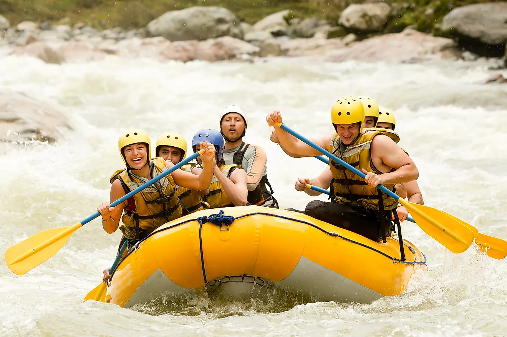

At Rapid River Rafting, our mission is to deliver unforgettable whitewater adventures
that connect people with nature, build lasting memories, and stir the spirit of exploration.
We believe in paddling with purpose, embracing the wild, and laughing through the rapids.
Our creed is simple: respect the river, trust your crew, and never back down from a wave.
"Ride the Rush" – that’s our motto, our mindset, and our promise to every adventurer.
History
Founded in 2010 by a group of river enthusiasts with a shared passion for adventure, Rapid River Rafting began
as a small operation on the banks of the Clearwater River. What started with a single
raft and a big dream has grown into one of the region’s most trusted names in outdoor adventure.
Over the years, we’ve guided thousands through roaring rapids, serene stretches,
and unforgettable journeys—all while staying true to our roots and love for the river.